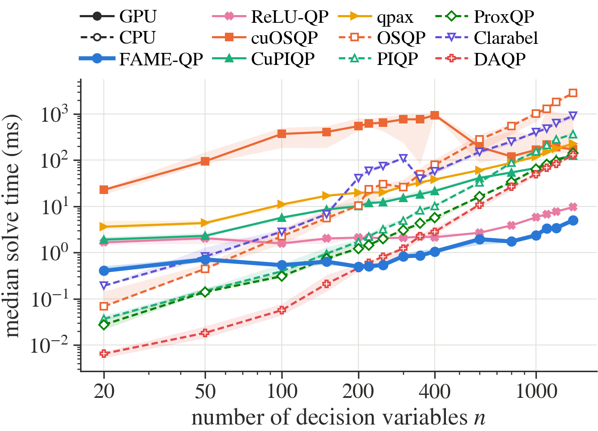
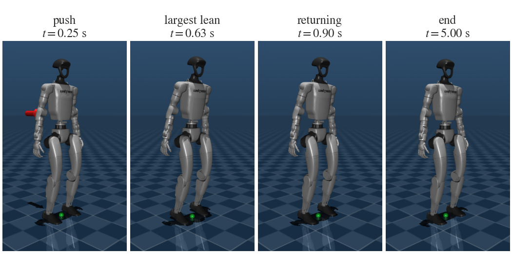
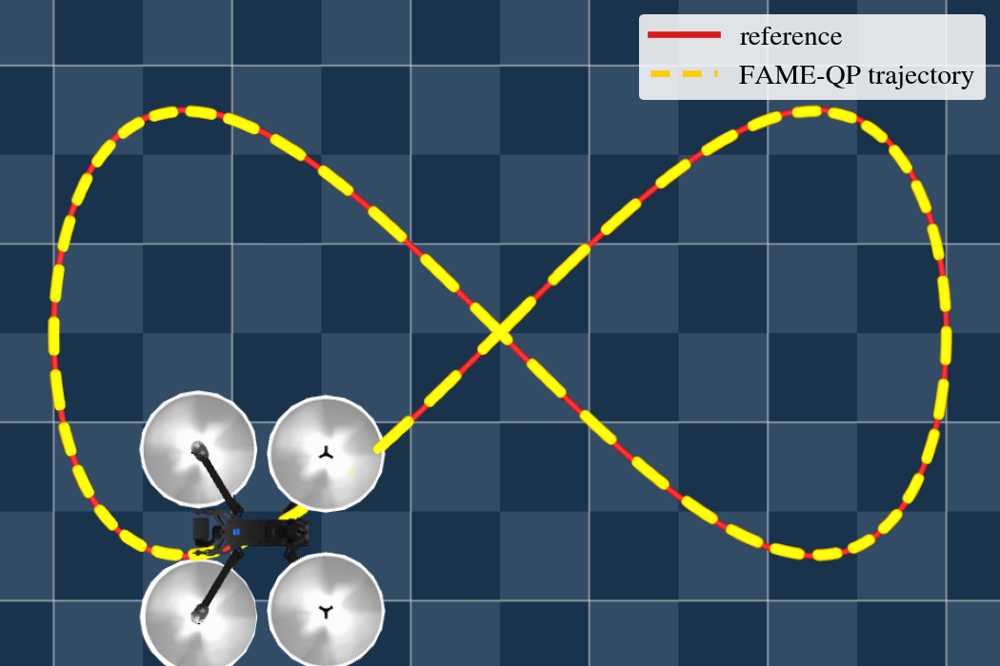

Abstract
Dense convex QPs of linear MPC, solved on the GPU.
Four ideas
Constraint-dependent operators
Rows that bound single variables, such as input limits, are handled element-wise instead of as dense rows: up to 4× less operator storage and up to 3× faster iterations.
Fused kernels, replayed as CUDA graphs
A full ADMM iteration runs in one or two kernels, and blocks of iterations with the stopping test are replayed with a single host call.
Automatic selection
A one-time device calibration and a short timing test per problem shape pick the execution mode, its tile sizes and, optionally, the precision.
Penalty probing and lazy updates
A bank of pre-inverted operators gives penalty adaptation without refactorisation and a probed starting penalty; changed matrices re-invert only the operator in use.
Use cases
FAME‑QP solves the QP at the heart of every MPC step whose optimization problem is a convex quadratic program, and keeps it on the GPU next to the model.
Linear MPC (LMPC)
Condensed linear MPC with input and state bounds, optionally LQR pre-stabilized, from a few hundred to
thousands of decision variables. fame_qp.mpc.LinearMPC builds the QP from \(A, B, Q, R\).
Koopman MPC
Koopman-lifted linear models whose matrices change at every step, as in KQ‑LMPC for quadrotors: the QP's matrices are swapped in place and only the active operator is re-inverted.
World-model and learned-dynamics MPC
When a learned world model has linear or locally linear latent dynamics, or is linearized along a trajectory, each MPC step is a QP. FAME‑QP solves it on the same GPU as the model, without a round trip to a CPU solver.
Fast MPC for robots
Real-time control at kilohertz rates: humanoid balance with a 2 ms control period and quadrotor tracking with changing models, in GPU pipelines for simulation, learning and inference.
Method
FAME‑QP runs the ADMM iteration of OSQP with pre-inverted linear systems, and is built around how that iteration executes on a GPU.
- Detect the constraint structurebox, split (diagonal block + dense rows) or general
- Ruiz-scale the problem data
- Select the execution modefrom a cached device calibration and a short timing test
- Invert a bank of five operators in
float64one per penalty, spaced by factors of 10 - Probe the starting penalty and capture the CUDA graph
- Update \(q, l, h\) (and \(P, G\) if they change)only the active operator is re-inverted in lazy mode
- Warm start, shifted one stage along the horizon
- Replay the graph: fused iterations + on-device stopping test
- One host read per block of iterationsterminate, detect stalls or switch to another operator in the bank
Execution modes
| Mode | Operator | Kernels per iteration | Best when |
|---|---|---|---|
| Single kernel | stacked \(S M S^\top\), \((n+m_c)^2\) entries | 1 | few dense rows: launch overhead dominates |
| Two kernels | factored \([M,\ MC^\top]\) and \(C\): \(m_c^2\) fewer entries | 2 | many dense rows: memory traffic dominates |
| Persistent | \(M\) held in registers | one launch per solve | small box-constrained problems |
The mode is chosen automatically from a per-device calibration and a timing test on placeholder operators of the problem's shape, and cached for later runs.
Results
All timings on an NVIDIA RTX 3080 Laptop GPU in float64, against CPU and GPU
solvers and GPU MPC methods, using their original implementations.
Random dense QPs

float64 except cuOSQP (float32).- Fastest GPU solver at every size from n = 20 to 1400, against ReLU‑QP, CuPIQP, qpax and cuOSQP.
- Faster than every CPU solver for n ≥ 220, including OSQP, PIQP, ProxQP, Clarabel and DAQP.
- Over n = 220–1400: 1.2–25.9× faster than DAQP and 1.5–4.3× faster than ReLU‑QP.
- In
float32, 1.95 ms at n = 1400, against 326 ms for cuOSQP.
Closed-loop MPC on random linear systems
| Method | n = 400 | 800 | 1200 | 1600 | 2000 |
|---|---|---|---|---|---|
| QP solvers, LQR-preconditioned condensed QP | |||||
| FAME‑QP | 0.658 ± 0.066 | 1.19 ± 0.04 | 2.05 ± 0.45 | 2.92 ± 0.09 | 4.23 ± 0.21 |
| ReLU‑QP | 2.10 ± 0.37 | 6.06 ± 1.02 | 11.6 ± 1.9 | 20.0 ± 3.9 | 30.9 ± 6.1 |
| CuPIQP | 23.7 ± 7.0 | 58.9 ± 11.3 | 178 ± 42 | 248 ± 63 | 449 ± 120 |
| GPU MPC methods, original OCP | |||||
| CUDA MPC | 22.7 ± 0.1 | 59.9 ± 0.5 | 82.8 ± 0.8 | 103 ± 0 | 138 ± 3 |
| πMPC | 9.06 ± 12.39 | 8.90 ± 12.88 | 6.78 ± 5.67 | 15.4 ± 23.9 | 13.4 ± 18.1 |
MPC step time [ms], mean ± standard deviation over 50 closed-loop steps, including data updates, warm-start shifts and the transfer of the first input to the host. Closed-loop costs of all methods agree within 0.06 %.
Robots in MuJoCo
Closed-loop control of a humanoid and a quadrotor, with the MPC QP solved by FAME‑QP at every control step.
Unitree G1 push recovery
- 29 position-controlled joints, 70 states, a 2 ms control period.
- Condensed QP with \(n = m = 29N\), general constraint structure, against ReLU‑QP.
- 2.3–3.1× lower mean QP time, within the control period at every horizon tested; ReLU‑QP exceeds it from N = 15.
- The largest horizon within the budget doubles, from N = 10 to N = 20, with comparable balance recovery.
| N (n) | FAME‑QP [ms] | ReLU‑QP [ms] | CoM RMS [mm] FAME‑QP / ReLU‑QP |
|---|---|---|---|
| 10 (290) | 0.650 ± 0.091 | 1.47 ± 0.05 | 18.7 / 18.7 |
| 15 (435) | 0.763 ± 0.116 | 2.26 ± 0.12 | 19.1 / 19.2 |
| 20 (580) | 1.04 ± 0.20 | 3.25 ± 0.13 | 20.5 / 19.5 |

Skydio X2 trajectory tracking with KQ‑LMPC

- Koopman-lifted linear MPC: both the Hessian and the constraint matrix change at every step.
- Condensed QP with n = 280 (N = 70), against CuPIQP.
- 12.5 ± 3.2 ms per step against 59.2 ± 4.8 ms: 4.7× faster, including matrix updates, warm starts and the host transfer.
- 99th percentile 17.6 ms, within the 20 ms control period (CuPIQP: 72.1 ms).
- Position RMSE 2.7 mm (CuPIQP: 3.4 mm).
Get started
Linux, an NVIDIA GPU supported by Triton, Python 3.9+ and PyTorch with CUDA.
# install pip install fame-qp # or from source git clone https://github.com/santoshrajkumar/fame-qp.git cd fame-qp && pip install -e .
from fame_qp import QP, Solver qp = QP.create(P, q, G, l, h, device="cuda") solver = Solver(qp, precision="float64") res = solver.solve() res.z, res.lam, res.status solver.update(q=q2, l=l2, h=h2) # warm, same setup solver.update_matrices(P=P2) # new matrices
examples/usage.py
The basic API: a QP, its solution and multipliers, updates between solves and a small MPC loop.
examples/demo.py
A random QP with n = 1000, closed-loop random LMPC, and MPC with A and B changing every step.
examples/quick_demo.ipynb
The paper's figures and tables from the saved results, and the experiments running live on your GPU.
FAQ
Common questions about GPU MPC with FAME‑QP.
What is FAME‑QP?
FAME‑QP is an open-source GPU solver for convex quadratic programs, built for the dense QPs of real-time model predictive control. It runs the ADMM iteration of OSQP in fused GPU kernels replayed through CUDA graphs and tunes itself to the GPU it runs on.
Which MPC problems can FAME‑QP solve?
Any MPC problem whose optimization step is a convex QP: linear MPC (LMPC) in condensed form with input and state bounds, LQR-pre-stabilized MPC, and MPC whose model matrices change at every step, such as Koopman-lifted or linearized models.
Can FAME‑QP be used for world-model MPC?
Yes, when the world model provides linear or locally linear latent dynamics, or is linearized along a trajectory, the resulting MPC step is a QP that FAME‑QP solves on the GPU, next to the model itself. Its matrix updates are designed for models that change at every step.
How fast is FAME‑QP?
On an RTX 3080 Laptop GPU it was the fastest GPU solver at every tested size of random dense QPs, up to 25.9 times faster than DAQP, 3.2 to 7.3 times faster than ReLU‑QP in closed-loop MPC, and 4.7 times faster than CuPIQP for quadrotor MPC with changing matrices.
How do I install FAME‑QP?
pip install fame-qp. It needs Linux, an NVIDIA GPU supported by Triton, Python 3.9 or newer
and PyTorch with CUDA.
Citation
If you use FAME‑QP, please cite the paper.
@misc{rajkumar2026fameqp,
title = {{FAME-QP}: A {GPU}-Accelerated Quadratic-Programming Solver for Real-Time Model Predictive Control},
author = {Rajkumar, Santosh Mohan and Goswami, Debdipta and Stockar, Stephanie},
year = {2026},
eprint = {2611.13766},
archivePrefix = {arXiv},
primaryClass = {cs.RO},
url = {https://arxiv.org/abs/2611.13766}
}